File: 000240.gt.txt (if the image is defective, simply delete all Arabic text and the line will be excluded)
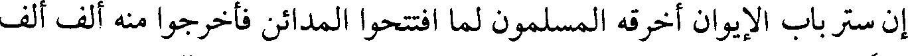
إن ستر باب الإيوان أخرقه المسلمون لما افتتحوا المدائن فأخرجوا منه ألف ألف
File: 000241.gt.txt (if the image is defective, simply delete all Arabic text and the line will be excluded)
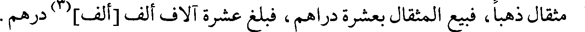
مثقال ذهبا، فبيع المثقال بعشرة دراهم، فبلغ عشرة آلاف ألف [ألف](3) درهم.
File: 000242.gt.txt (if the image is defective, simply delete all Arabic text and the line will be excluded)
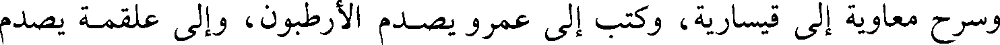
وسرح معاوية إلى قيسارية، وكتب إلى عمرو يصدم الأرطبون، وإلى علقمة يصدم
File: 000243.gt.txt (if the image is defective, simply delete all Arabic text and the line will be excluded)
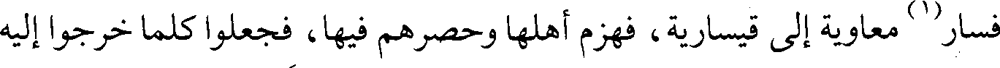
فسار(1) معاوية إلى قيسارية، فهزم أهلها وحصرهم فيها، فجعلوا كلما خرجوا إليه
File: 000244.gt.txt (if the image is defective, simply delete all Arabic text and the line will be excluded)
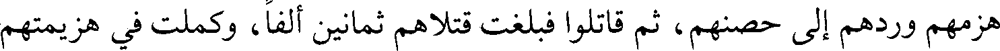
هزمهم وردهم إلى حصنهم، ثم قاتلوا فبلغت قتلاهم ثمانين ألفا، وكملت في هزيمتهم
File: 000245.gt.txt (if the image is defective, simply delete all Arabic text and the line will be excluded)
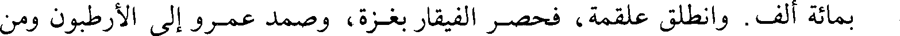
بمائة ألف . وانطلق علقمة، فحصر الفيقار بغزة، وصمد عمرو إلى الأرطبون ومن
File: 000246.gt.txt (if the image is defective, simply delete all Arabic text and the line will be excluded)
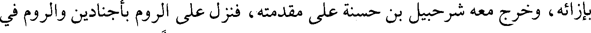
بإزائه، وخرج معه شرحبيل بن حسنة على مقدمته، فنزل على الروم بأجنادين والروم في
File: 000247.gt.txt (if the image is defective, simply delete all Arabic text and the line will be excluded)
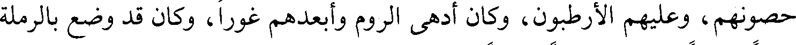
حصونهم، وعليهم الأرطبون، وكان أدهى الروم وأبعدهم غورا، وكان قد وضع بالرملة
File: 000248.gt.txt (if the image is defective, simply delete all Arabic text and the line will be excluded)
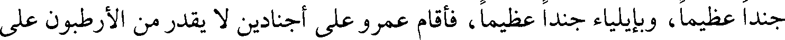
جندا عظيما، وبإيلياء جندا عظيما، فأقام عمرو على أجنادين لا يقدر من الأرطبون على
File: 000249.gt.txt (if the image is defective, simply delete all Arabic text and the line will be excluded)
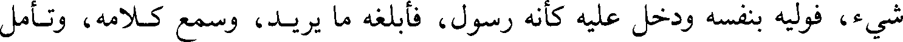
شيء، فوليه بنفسه ودخل عليه كأنه رسول، فأبلغه ما يريد، وسمع كلامه، وتأمل
File: 000250.gt.txt (if the image is defective, simply delete all Arabic text and the line will be excluded)
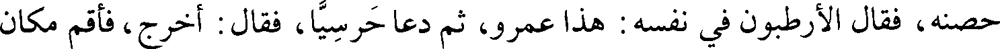
حصنه، فقال الأرطبون في نفسه : هذا عمرو، ثم دعا حرسيا، فقال : أخرج، فأقم مكان
File: 000251.gt.txt (if the image is defective, simply delete all Arabic text and the line will be excluded)
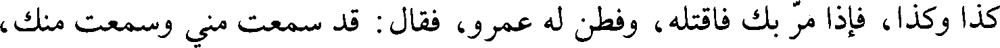
كذا وكذا، فإذا مر بك فاقتله، وفطن له عمرو، فقال : قد سمعت مني وسمعت منك،
File: 000252.gt.txt (if the image is defective, simply delete all Arabic text and the line will be excluded)
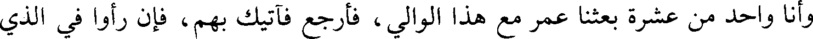
وأنا واحد من عشرة بعثنا عمر مع هذا الوالي ، فأرجع فآتيك بهم، فإن رأوا في الذي
File: 000253.gt.txt (if the image is defective, simply delete all Arabic text and the line will be excluded)
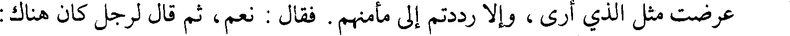
عرضت مثل الذي أرى، وإلا رددتم إلى مأمنهم. فقال : نعم، ثم قال لرجل كان هناك:
File: 000254.gt.txt (if the image is defective, simply delete all Arabic text and the line will be excluded)
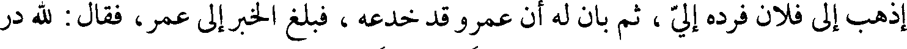
إذهب إلى فلان فرده إلي ، ثم بان له أن عمرو قد خدعه ، فبلغ الخبر إلى عمر، فقال: لله در
File: 000255.gt.txt (if the image is defective, simply delete all Arabic text and the line will be excluded)
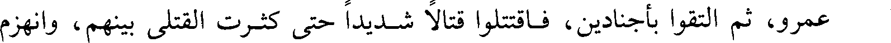
عمرو، ثم التقوا بأجنادين، فاقتتلوا قتالا شديدا حتى كثرت القتلى بينهم، وانهزم
File: 000256.gt.txt (if the image is defective, simply delete all Arabic text and the line will be excluded)
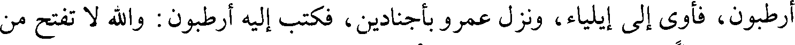
أرطبون، فأوى إلى إيلياء، ونزل عمرو بأجنادين، فكتب إليه أرطبون : والله لا تفتح من
File: 000257.gt.txt (if the image is defective, simply delete all Arabic text and the line will be excluded)
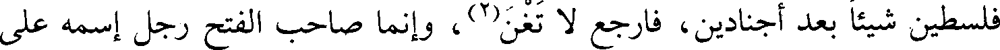
فلسطين شيئا بعد أجنادين، فارجع لا تغن(2)، وإنما صاحب الفتح رجل إسمه على
File: 000258.gt.txt (if the image is defective, simply delete all Arabic text and the line will be excluded)
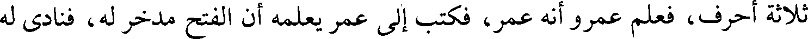
ثلاثة أحرف، فعلم عمرو أنه عمر، فكتب إلى عمر يعلمه أن الفتح مدخر له، فنادى له
File: 000259.gt.txt (if the image is defective, simply delete all Arabic text and the line will be excluded)
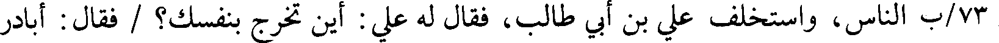
73/ب الناس، واستخلف علي بن أبي طالب، فقال له علي : أين تخرج بنفسك؟ / فقال : أبادر
File: 000260.gt.txt (if the image is defective, simply delete all Arabic text and the line will be excluded)
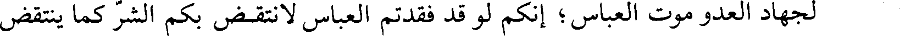
لجهاد العدو موت العباس ؛ إنكم لو قد فقدتم العباس لانتقض بكم الشر كما ينتقض
File: 000261.gt.txt (if the image is defective, simply delete all Arabic text and the line will be excluded)
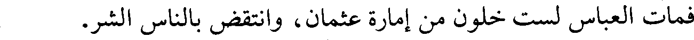
فمات العباس لست خلون من إمارة عثمان، وانتقض بالناس الشر.
File: 000262.gt.txt (if the image is defective, simply delete all Arabic text and the line will be excluded)
168
File: 000263.gt.txt (if the image is defective, simply delete all Arabic text and the line will be excluded)
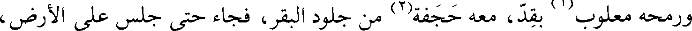
ورمحه معلوب(1) بقد، معه حجفة(2) من جلود البقر، فجاء حتى جلس على الأرض،
File: 000264.gt.txt (if the image is defective, simply delete all Arabic text and the line will be excluded)
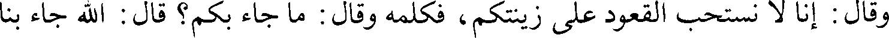
وقال: إنا لا نستحب القعود على زينتكم ، فكلمه وقال : ما جاء بكم؟ قال : الله جاء بنا
File: 000265.gt.txt (if the image is defective, simply delete all Arabic text and the line will be excluded)
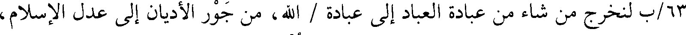
63/ب لنخرج من شاء من عبادة العباد إلى عبادة / الله، من جور الأديان إلى عدل الإسلام،
File: 000266.gt.txt (if the image is defective, simply delete all Arabic text and the line will be excluded)
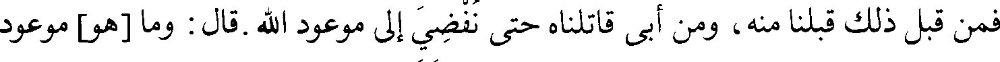
فمن قبل ذلك قبلنا منه، ومن أبى قاتلناه حتى نفضي إلى موعود الله. قال : وما [هو] موعود
File: 000267.gt.txt (if the image is defective, simply delete all Arabic text and the line will be excluded)
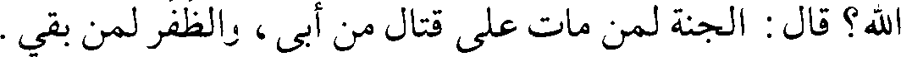
الله؟ قال : الجنة لمن مات على قتال من أبى، والظفر لمن بقي.
File: 000268.gt.txt (if the image is defective, simply delete all Arabic text and the line will be excluded)
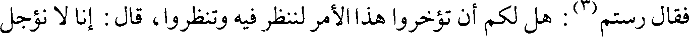
فقال رستم(3): هل لكم أن تؤخروا هذا الأمر لننظر فيه وتنظروا، قال : إنا لا نؤجل
File: 000269.gt.txt (if the image is defective, simply delete all Arabic text and the line will be excluded)
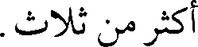
أكثر من ثلاث.
To Save: `Ctrl+s`, make sure to choose `Webpage, complete`!